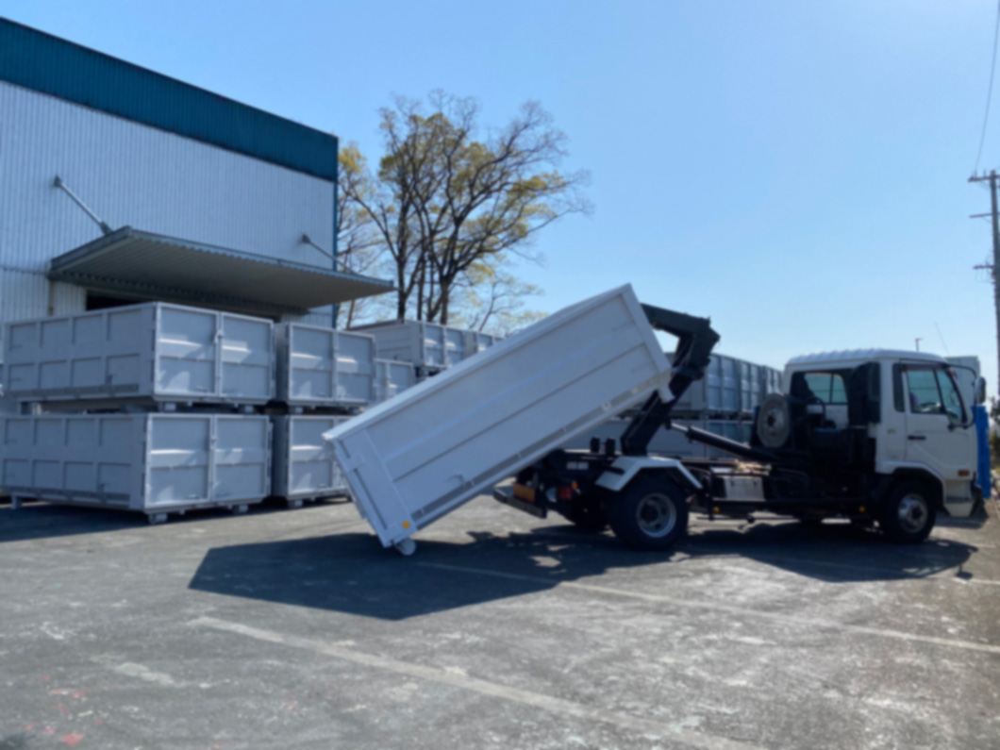

【産業廃棄物収集運搬｜セイシン興産 産業廃棄物運搬業】
セイシン興産
有限会社セイシン興産
・産業廃棄物収集運搬業

SERVICE 事業内容
アームロール車で建築現場など
お客様指定の場所にバッカン を設置・回収
LINEUP車両紹介
- ４tアームロール 車１５台
- 大型車 ２台
- コンテナ・バッカン 所有台数１００台以上
INDUSTRIAL WASTE 産業廃棄物10品目
- 廃プラスチック類
- 金属くず
- 紙くず
- ガラスくず
- 木くず
- がれき類
- 繊維くず
- ゴムくず
- 石棉含有産業廃棄物
- 水銀使用製品産業廃棄物
- その他


対応可能エリア
近畿エリアを中心にご対応させていただきます。
専門オペレーターがご対応いたしますのでお気軽にお電話ください。
- 大阪府
- 京都府
- 奈良県
- 滋賀県
- 兵庫県
- 和歌山県
お電話お待ちしています
06-6990-6400
受付時間 9：00-20：00